Raportul de fata surprinde modul de interactiune al unui utilizator cu aplicatia creata
oferind detalii despre modul de utilizare al acesteia.
2. Introducere:
METOO se adreseaza persoanele care studiază/lucrează în localuri comune disponibile
într-un areal geografic: biblioteci, cafenele sau spaţii de co-working. Aplicația încurajeaza
interacțiunea dintre aceste persoane, pentru a putea studia/lucra împreuna. Istoria a dovedit că oamenii sunt capabili de lucruri
mărețe doar dacă colaborează, sau după cum spune Chuck Page, “o frunză ce lucrează de una singură nu face umbră’’.
3. Privire de ansamblu:
Atunci cand intra pe aplicatia noastra, utilizatorul va ajunge mai intai pe pagina de Log in/Sign up. Daca utilizatorul nu are cont, isi va putea face unul completand datele de pe pagina de Sign up, insa daca are cont acesta poate accesa aplicatia complentand username-ul si parola de pe pagina de Log in. Apoi va fi directionat spre pagina Home. Aceasta pagine are meniul in partea de sus, sub logo, si diferite elemente in josul paginii (redirectari spre diferite locatii din interiorul aplicatiei). Prin intermediul meniului poate naviga spre pagina Profile, Activity, Locations, Messages, Discover People si Notifications (reprezentata de o iconita sub forma unui clopotel). Aceste pagini nu sunt accesibile decat dupa log in/sign up.
4. Ghid pentru pagina Home:
Meniul din partea se sus a paginii cuprinde redirectionari spre paginile aplicatiei: Profile, Activity, Locations, Messages, Discover People si Notifications
Navigand in josul paginii vom observa trei imagini si cate un mesaj pentru fiecare, ce reprezinta link-uri spre o alte pagini.
"connect with people" va redirectiona utilizatorul spre pagina Discover People
"tell them who are you" va redirectiona utilizatorul spre pagina Profile
"discover new places" va redirectiona utilizatorul spre pagina Locations
5. Ghid pentru pagina Profile:
Pagina aceasta cuprinde detalii despre utilizator, si este formata din: poza de profil, detaliile contului, descrierea utilizatorului si pasiunile sale.
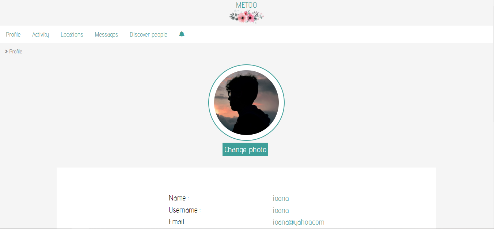
Poza de profil: aceasta poate fi schimbata apasand pe butonul "Change photo", apoi selectand o poza din calculator personal si "Save"
Detaliile contului si Descrierea: acestea pot fi editate apasand iconita din coltul de jos din dreapta si apoi "save"
Pasiunile: acestea sunt reprezentate sub forma unei liste de tag-uri, pentru a edita aceasta lista trebuie apasat pe iconita din coltul de jos din dreapta. Pentru a adauga un tag utilizatoul va scrie pasiunea si va apasa pe tasta "space", iar pentru a sterge un tag utilizatorul va apasa iconita din stanga tag-ului sub forma de "X", aceasta iconita va aparea la glisarea cursorului peste tag.
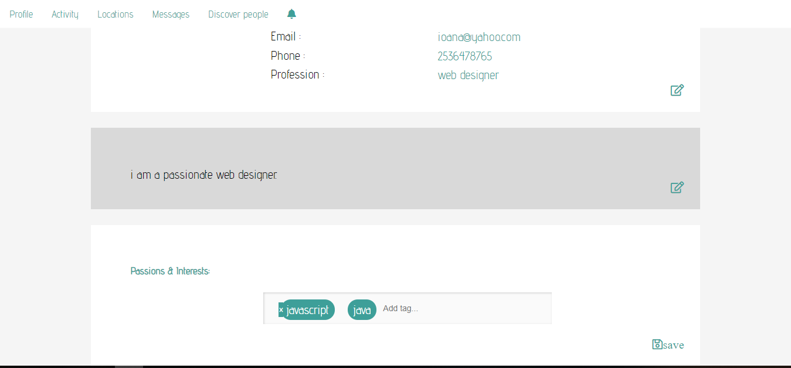
Profilul altui utilizator, decat cel curent, va avea aceasi forma, doar ca nu poate edita datele si exista trei elemente noi: butonul "Send invitation" care va redirectiona spre pagina de creare a unei invitatii, butonul "Send message" care va redirectiona spre pagina Compose din cadrul paginii Messages, iar in josul paginii va fi afisata activitatea curenta a acelui utilizator.
6. Ghid pentru pagina Activity:
Aceasta pagina va afisa activitatile utilizatorului, fie cea curenta sau cele trecute.
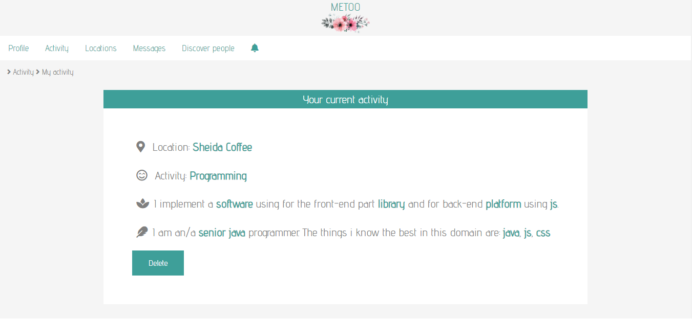
Fiecare activitate poate fi stearsa apasand butonul "Delete"
Pentru a adauga o noua activitate, utilizatorul va apasa butonul "Add New Activity", va completa datele necesare si va apasa "Save Activity", apoi va fi redirectionat din nou pe pagina activitatilor sale, care include si noua activitate.
Atunci cand utilizatorul creaza o noua activitate, ceilalti utilizatori vor primi o notificare despre ea.
7. Ghid pentru pagina de Locations:
Pagina Locations contine un slide-show cu locatiile din baza de date a aplicatiei si ultimele 3 locatii la care a adaugat activitati utilizatorul.
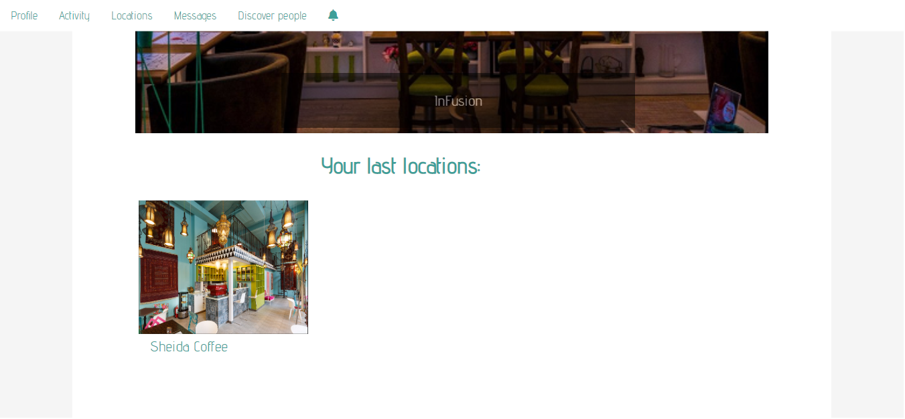
Pentru a naviga pe slide-show utilizatorul se va folosi de sagetile din dreapta si stanga a fiecarei imagini. Iar daca va apasa pe numele locatiei va fi redirectionat pe pagina acelei locatii.
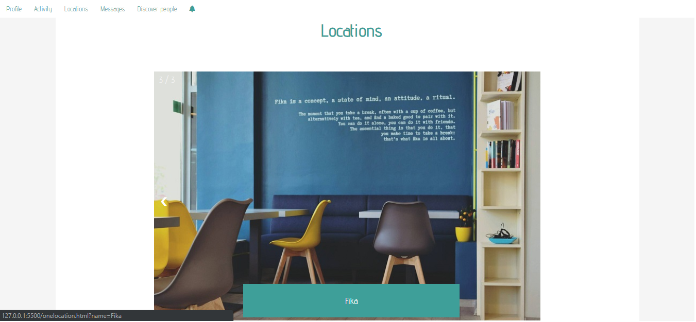
Pagina unei locatii va contine detalii despre acea locatie precum: programul, contact, adresa si statistica ce afiseaza limbajul cel mai des adaugat in activitatile(daca exista) ce au avut loc la acea locatie.
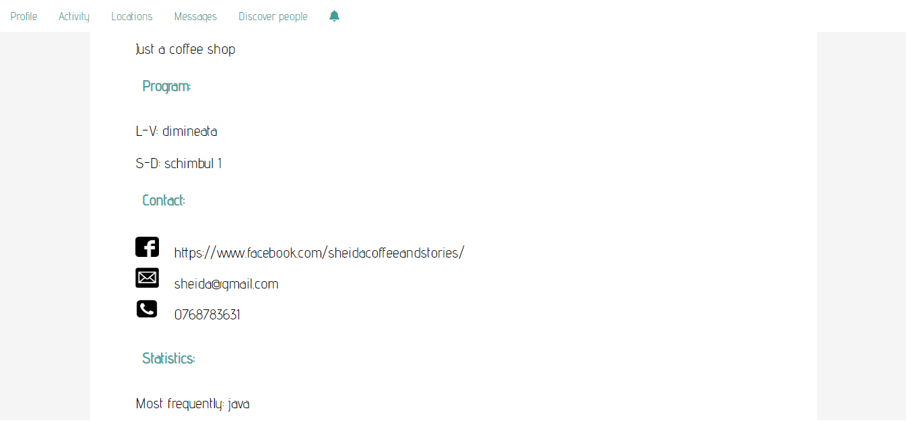
8. Ghid pentru pagina de Messages:
Pagina Messages cuprinde trei pagini: Received, Sent si Compose.
Received: reprezinta mesajele primite de utilizator. Daca acesta nu are nici un mesaj primit va fi afisat un mesaj de forma: "There are no messages!".
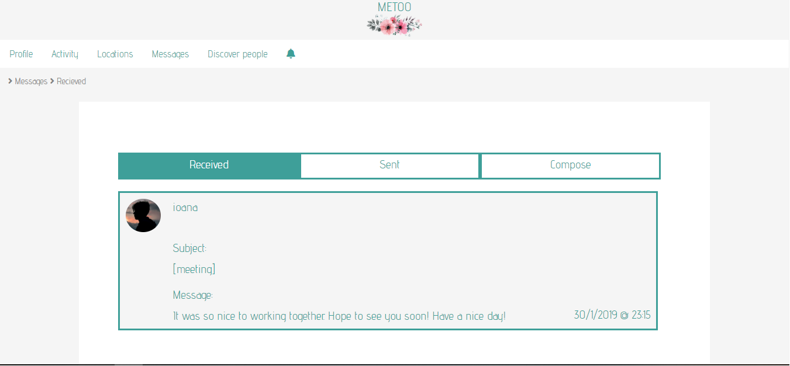
Sent: reprezinta mesajele trimise de catre utilizatorul actual.
Compose: utilizatorul completeaza campurile "To" ce reprezinta username-ul destinatarului, "Subject" reprezinta un rezumat scurt despre mesaj, iar apoi mesajul in sine. Mesajul va fi trimis apasand butonul "Send", apoi utilizatorul va fi redirectionat spre pagina "Sent" unde se va afla si noul mesaj.
9. Ghid pentru pagina de Discover people:
Aceasta pagina cuprinde un Search-bar si o lista de utilizatori a aplicatiei.
Daca nu a fost scris nimic in search-bar atunci lista va cuprinde toti utilizatorii.
In cazul in care a fost scris ceva in search-bar, lista va cuprinde utilizatorii ce au numele asemanator cu ceea ce a scris.
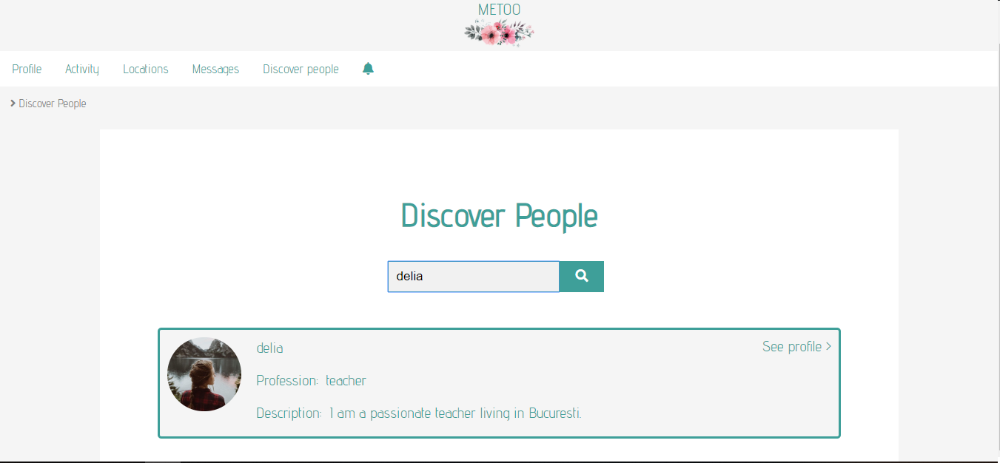
10. Ghid pentru pagina de Notifications:
Pagina de Notification poate fi accesata apasand pe iconita in forma de clopotel
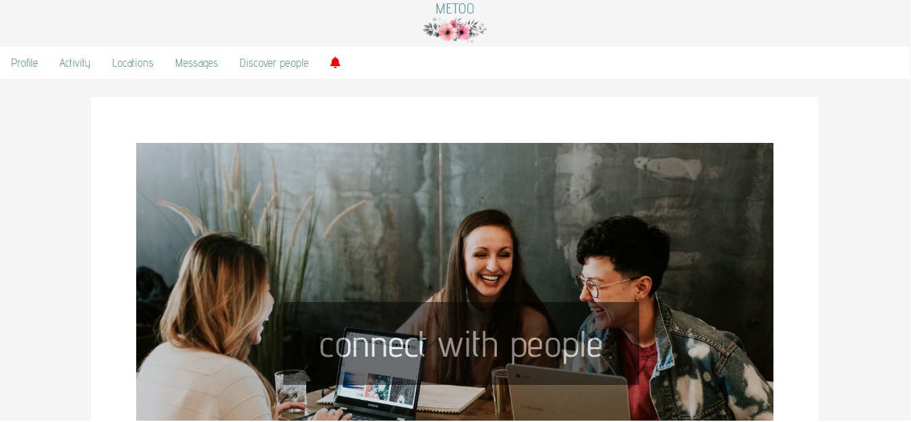
Daca utilizatorul are notificari noi clopotelul va fi de culoare rosie
Pe pagina vor fi afisate notificarile, iar cele noi, pe care utilizitorul nu le-a mai vazut pana acum, vor avea borderul evidentiat
Notificarile sunt de trei tipuri: un nou mesaj primit, o invitatie la cafea, sau notificare despre o activitate a altui utilizator
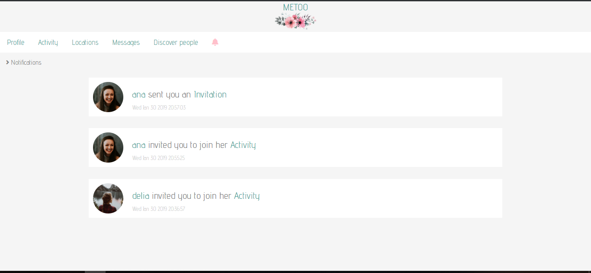
10. Ghid pentru pagina de Invitation:
Pagina de creare a unei invitatii cuprinde campurile ce trebuie completate si butonul "Send invitation" ce va efectua notificarea si butonul "Cancel" ce va redirectiona utilizatorul inapoi la pagina de profil a persoanei caruia dorea sa ii trimita invitatia
Pagina invitatiei redirectionata de la notificari va cuprinde detaliile despre invitatie: "From","Where","When","Activity" si doua butoane "Accept" si "Decline", ce reprezinta acceptul, respectiv refuzul invitatiei, ambele redirectioneaza utilizatorul pe pagina Home
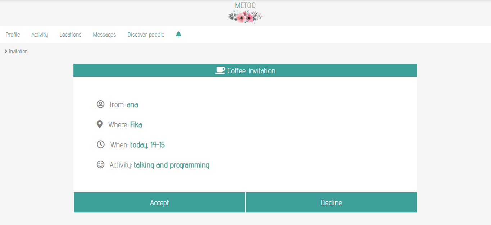
9.Concluzie
Modul in care a fost construita aplicatia ofera utilizatorului un mod usor de a face managemantul activitatilor, si conectarea cu alti utilizatori. Iar ghidul oferit in aceasta documentatie se asigura ca toate functionalitatile sunt cunoscute si intelese.